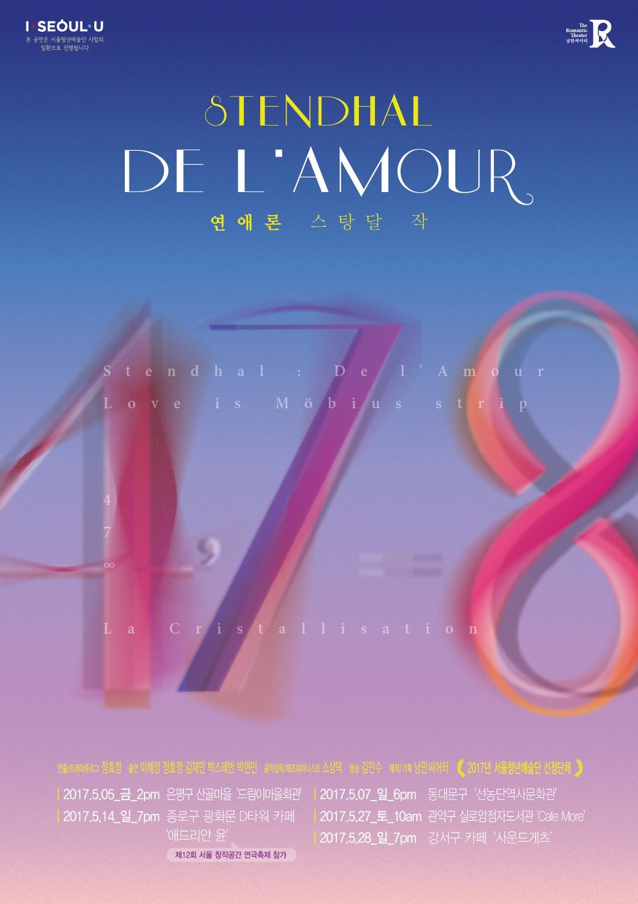

On Love
〈연애론〉(De l'Amour, 1822) 원작 · after Stendhal's essay De l'Amour (1822)
서울청년예술단 〈살롱프로젝트〉 두 번째 작품 · 2017년 봄 서울 카페·작은 공간 순회 · 제12회 서울 창작공간 연극축제 참가 · The second work in the Salon Project · a spring 2017 tour of cafés and small rooms across Seoul · presented at the 12th Seoul Creative Arts Space Theatre Festival
〈연애론〉은 낭만씨어터 〈살롱프로젝트〉의 두 번째 작품으로, 프랑스의 작가 스탕달의 동명 에세이를 무대로 옮긴 음악낭독극이다. 스탕달의 〈연애론〉은 사랑하는 감정에 대한 심리 분석과, 여러 나라의 연애 풍습, 그리고 여성의 교육에 관한 사회학적 성찰을 담은 에세이다.
청년 세대가 안고 있는 가장 큰 고민 가운데 하나가 결국 '사랑'이라는 데서 출발해, 2탄의 주제로 사랑을 골랐다. 화려한 무대 없이 배우들의 낭독과 노래, 재즈 피아노의 반주만으로 — 스탕달이 철학적인 동시에 낭만적으로 풀어낸 사랑의 이야기를, 봄날의 카페에서 관객과 가까이 나눈다.
On Love is the second work in Nangman Theatre's Salon Project, a music-reading theatre built from the essay of the same name by the French writer Stendhal. His De l'Amour is at once a psychology of the feeling of love, a survey of how different cultures court, and a sociological reflection on the education of women.
Taking as its starting point the thought that love is, in the end, among the deepest preoccupations of a young generation, the company chose love as the theme of this second piece. Without scenery, carried by reading, song, and a single jazz piano, it shares Stendhal's philosophical-yet-romantic account of love up close — with audiences gathered in spring cafés.
사랑에 대한 네 가지 표현(love)과 일곱 단계의 결정화(crystallisation)를 지나, 비로소 우리는 영원한 사랑(∞)에 이른다.
— 정효정이 각색한 〈연애론〉에서 끌어낸 ‘4 · 7 · ∞’ · After Stendhal's theory of love
정효정 단장이 각색한 〈연애론〉에서 ‘4 · 7 · ∞’라는 기호를 끌어내고, 영화 〈라라랜드〉의 음악과 색감을 빌려 사랑의 이론을 타이포그래피로 시각화했다. · The motif ‘4 · 7 · ∞’ was drawn from Hyojung Jung's adaptation of On Love; the score and palette borrow from the film La La Land. Design by Kyung-ah Seo.
제35회 인천연극제 프린지 · Incheon Theatre Festival Fringe (2017)
서울청년예술단 〈살롱프로젝트〉 2탄 · Salon Project II — Seoul café tour (2017)
서울청년예술단 선정 사업으로 서울 자치구를 순회한 공연 · 제12회 서울 창작공간 연극축제 참가. · Toured across Seoul's districts as part of the Seoul Youth Arts Group programme; presented at the 12th Seoul Creative Arts Space Theatre Festival.
공연 장면 · 제35회 인천연극제 프린지 페스티벌 (2017) · 배우들의 낭독과 노래, 피아노, 뒤로 영상이 투사된다
In performance · 35th Incheon Theatre Festival Fringe — reading, song, and piano, with projected video behind
리플렛 · 공연 소개 · 디자인 컨셉 · 배우와 스탭 (2017)
Leaflet — about the work · design concept · cast & staff